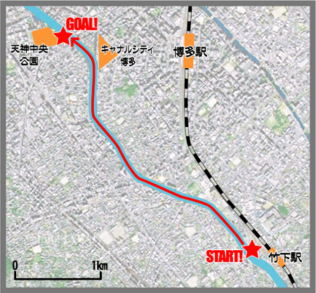

川下りとは･･･ 「九州大学大橋キャンパス芸工祭を地域の人々に知らしめる、類まれなる宣伝方法である。」 by2005年川下り頭
福岡市の中心を南から北へと流れる那珂川。 その那珂川を、学園祭のＰＲ＆清掃活動をしながら下って行くのが、芸工大学園祭時代からの伝統行事である『川下り』です。
コースはＪＲ竹下駅周辺から天神中央公園であい橋までの約３km。

9月下旬の少し肌寒くなる季節の中、手作りのイカダに乗り、男も女も関係なくずぶ濡れになりながら下っていきます。 「え〜」と思うかもしれませんが、これがなかなか楽しいんですよ。 もちろん最初は川の汚さに尻込みしてしまう人も。しかし！一旦入ってみれば、後ははもうみんながむしゃらになってイカダを押して行きます。 そうして頑張ってゴールした後の爽快感は最高です！
昨年の川下りの様子
毎年、地域の方々からも川辺からたくさんの声援をいただいています。 那珂川沿いの住民の方々の間では、毎年恒例の見ものになっているという噂も･･･